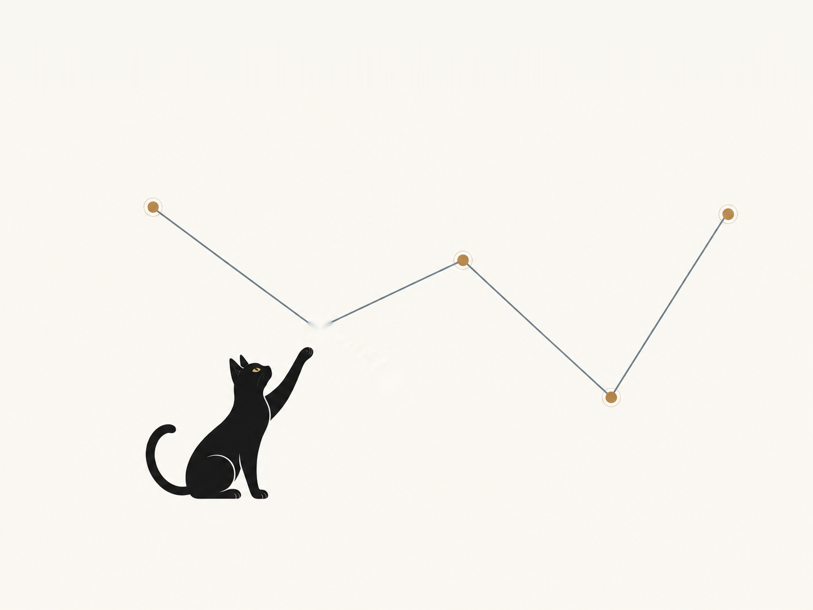

DISCOVERY
Cosmology and ML Research
Galaxy motions, hot gas, and cluster structure reveal how the Universe evolves. Interpretable AI uncovers the underlying physics—and exposes when models learn the wrong lessons.
Research →HOME
As a tenured astronomy researcher, I develop modern statistical and machine learning methods for interpreting large-scale cosmological structure.
As the Deputy Head of the Data Science Mission Office at the Space Telescope Science Institute, I am an organizational leader in AI strategy and policy.

DISCOVERY
Galaxy motions, hot gas, and cluster structure reveal how the Universe evolves. Interpretable AI uncovers the underlying physics—and exposes when models learn the wrong lessons.
Research →TEAMWORK
Meet the collaborators who I work with to advance ML methods for cosmology.
My Group →SCIENTIFIC PRACTICE
White papers and articles on policies, standards, and culture, because being a scientist isn't just about the next big discovery.
Field Notes →FIELD NOTES
Explore how to develop an AI approach that supports your unique research priorities.
Open The Policy Lab →